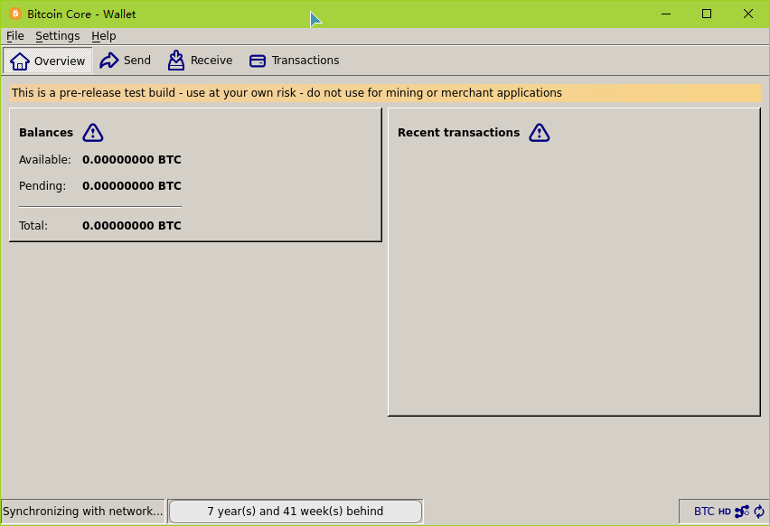

How to build bitcoin on Windows10 subsystem
1 Preparation
Before compile the bitcoin, we should prepare some tools and the source code to complete this task.
- Get the source code:
git clone https://github.com/bitcoin/bitcoin.gitAlternatively, you can download the source code by zip format if you can't tolerant the speed. Check the tool chain: In general, on linux, the flow of compile a opensourced software is
./autogen.sh # Sometimes, optional ./configure make make install
The flow of building the bitcoin is very similiar. However, to complete the compilation, some tools are necessary, like autotools, make, gcc/g++ and so on.
autotools: contains autoscan, aclocal, autoheader, automake, autoconf, libtools. Please check if they are installed on your system or not. If not, please useapt-getto install them.
make: generally, it has been pre-installed on ubuntu. If not, install it.
gcc/g++:sudo apt-get install build-essiential
- Based on above work, we can start our task now. However, there will be some troubles during your compilation, just solve them one by one later.
2 Main task
As we have downloaded the source code, just enter the directory of bitcoin. Flow the steps in the document of doc/build-unix.md:
./autogen.shGenerally, you can complete it successfully. However, somebody (like me) will have some troubles. As I can't predict all the issues, I will clarify what I faced during this process.
When I run this command, some ERRORS occured, the format of them are: undefined MACRO AC_ERROR_MSG. By searching it through internet(FK THE NETWORK OF TC, NO GOOGLE, NO STACKOVERFLOW),
I found it was caused by autoconf's not being able to find the macro of libtools. My SOLUTION was coping the file/usr/share/libtools/m4to/usr/share/autoconf../configureIn this step, you will find some issues of dependencies, like qt, libdb++, libboost and so on. Don't worry, all the issues can be solved if you read the log of configure carefully.- For most people, the first error is the libdb++'s being not installed.
sudo apt-get install libdb5.*++5.* represents the version which you want to install.
For the bitcoin, it recomment to install version 4.8, however, I can't find this version by apt-get. After install it, when you re-run this script, please add the option of--with-incompitabledb, or it would fail again. - For me, the second issue was qt. In fact, qt is not necessary for bitcoin. If you don't want to use GUI, please skill it.
sudo apt-get libqt4-dev libqt4-core libqt4-guiIf your ubuntu was healthy, the qt issue could be fixed temporary. Why it is temporary, I will tell you in the next section. For me, a lot of dependencies issue of QT occured because I used dpkg to install some incompitable version. If you have the same issue, please usesudo apt-get -f installto fix it. - libboost (>=1.47)
As bitcoin relied on boost library, it is mandantory. For most ubuntu system with right source.list, you can use the
sudo apt-get install libboost-versionto install it correctly. However, somebody would be unlucky like me, we should download the source code and compile it ourselves. If you have the same issue, just download the source code from Boost website and follow the instruction in the document to install it. - libzmq (>4.0) Unfortunately, I can't find the libzmq4.x through apt-get, we should download the source code and install it ourselves. Please go to the page of ZeroMQ website and download the source code. Follow the instruction of INSTALL to install this lib.
protobuf
git clone https://github.com/google/protobuf.git ./autogen.sh ./configure make sudo make install
NOTE: For the item 4 and 5, you may not find the error message on the log, but without them, you can't build the bitcoin-qt. If you read the log carefully enough, you can see the WARNING message.
- For most people, the first error is the libdb++'s being not installed.
makeI spent much time on fixing all the issue in this process. For me, I faced some link error ofundefined reference to boost or protobuf or qt. Even though I can confirm all the libraries above have been installed, these error still happened. If you have the same issue, don't worry, please follow my steps.- Check the latest command before the error, such as
CXXLD *boost*, if you have the same log, just open the src/Makefile and modified the LDFLAGS to{LDFLAGS = -L"/usr/local/lib"}. Re-run and check. If the same error happened again, follow the steps below:
make clean sudo emacs /etc/ld.so.conf # add the /usr/local/lib at the end of file, save sudo ldconfig make
- If you find some error of protobuf like the ".h file was generated by old version", please enter the corresponding directory (*IMPORTANT) and run
make clean, then return to bitcoin and run make.
- Check the latest command before the error, such as
sudo make installNo problems yet.
3 Preview of bitcoin-qt

Figure 1: preview of bitcoin